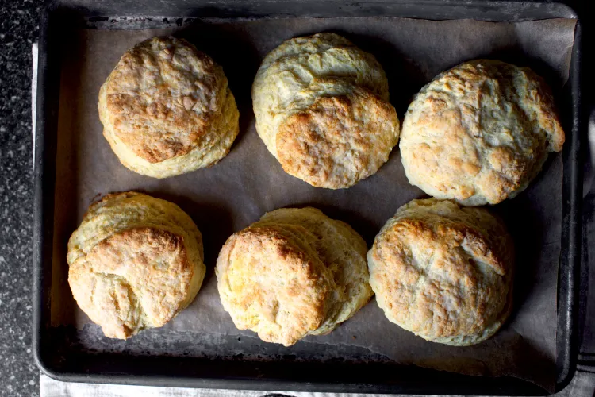

Buttermilk Biscuits

Mouth watering scones
Biscuit recipe from my favorite recipe website. The kids love to have these with nutella. Original recipe here: Smitten Kitchen's favorite buttermilk biscuit recipe
Ingredients
- 2 1/4 cups (280 grams) all-purpose flour
- 2 teaspoons to 1 1/2 tablespoons (10 to 20 grams) sugar (to taste, see note above)
- 1 tablespoon (15 grams) baking powder
- 3/4 teaspoon (5 grams) table salt
- 3/4 teaspoon baking soda
- 9 tablespoons (125 grams) chilled unsalted butter, cut into small chunks
- 3/4 cup (175 ml) buttermilk
Steps
- Heat oven to 400 °F and cover baking sheet with parchment paper. Whisk flour, sugar, baking powder, salt and baking soda in large, wide bowl. Using fingertips or a pastry blender, work butter into dry ingredients until the mixture resembles a coarse meal, Add buttermilk and stir until large, craggy clumps form. Reach hands into bowl and knead mixture briefly until it just holds together.
- To form biscuit rounds: Transfer dough to floured counter and pat out until 1/2 to 3/4-inch thick (err on the thin side if uncertain, as the tall ones will literally rise and then tip over, like mine did the day I photographed these). Using a round cutter (2 inches for regular sized biscuits, 3 inches for the monstrous ones shown above), press straight down — twisting produces less layered sides — and transfer rounds to prepared sheet, spacing two inches apart.
- To make drop biscuits: Drop 1/4-cup spoonfuls onto baking sheet, spacing two inches apart.
- Both methods:Bake until biscuits are golden brown on top, about 12 to 15 minutes. Cool slightly, then serve warm, with butter/jam/eggs/bacon/sausage and gravy or any combination thereof. Happy weekend!